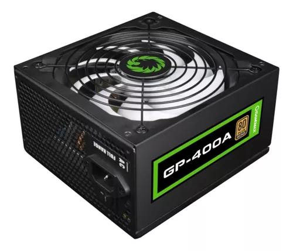
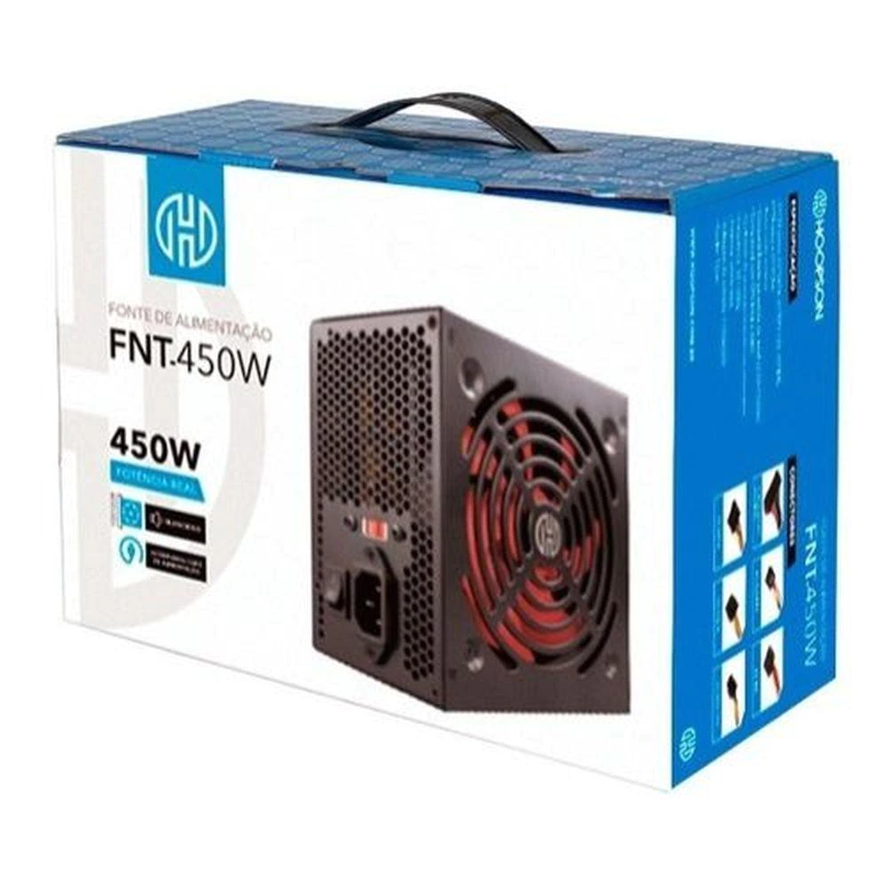
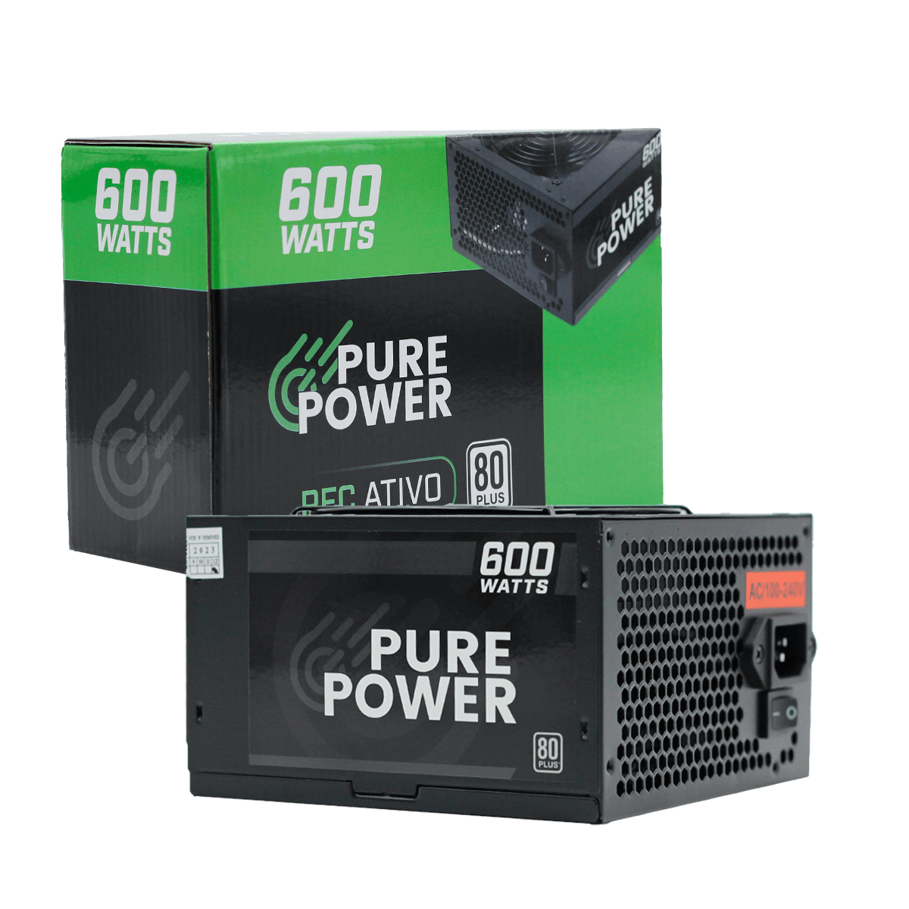
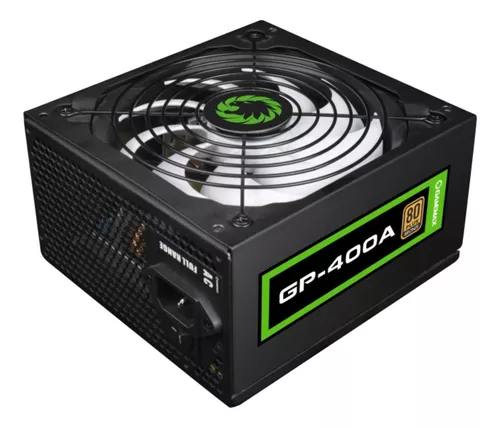
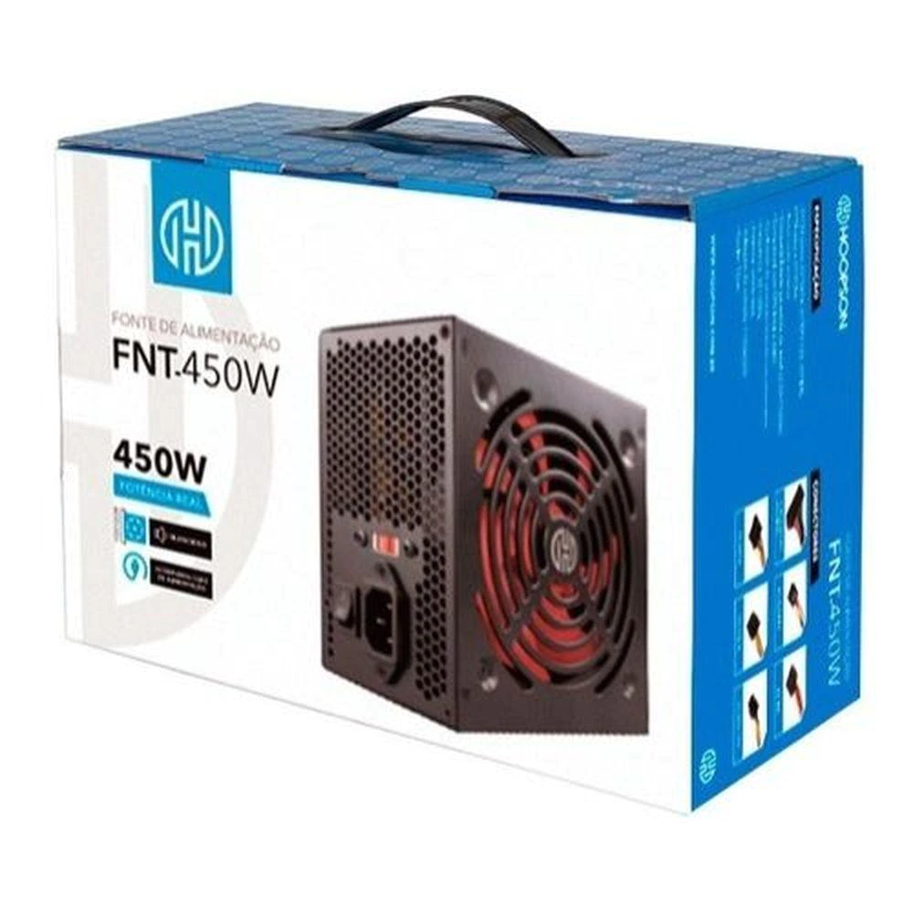
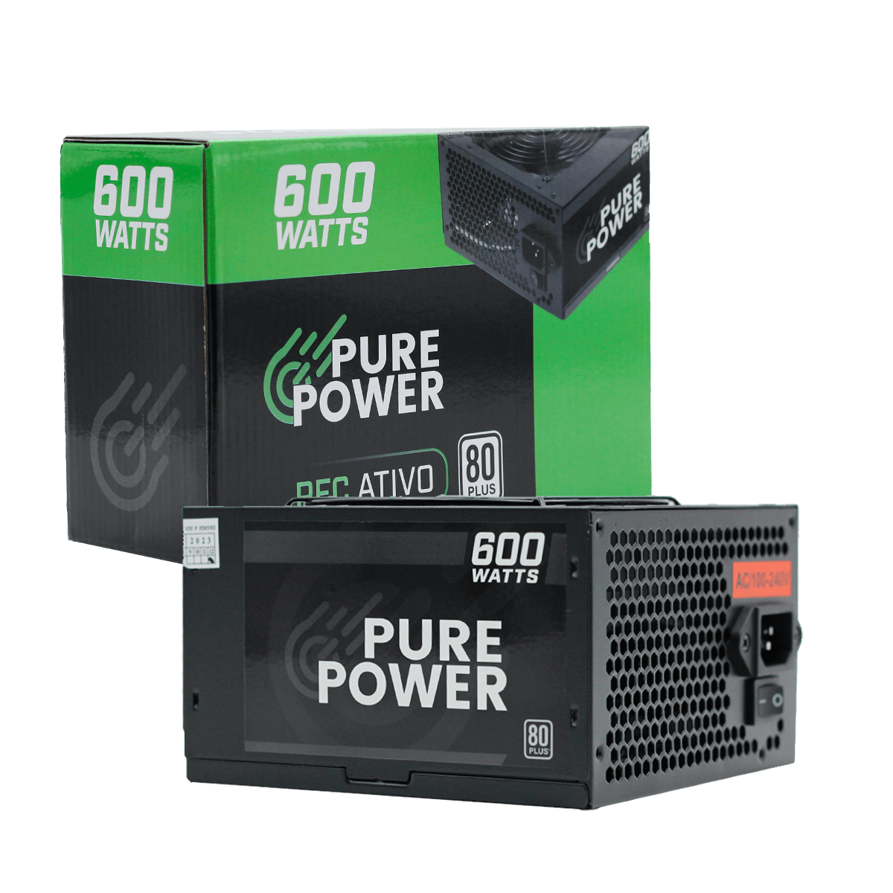

Fonte de alimentação para PC GameMax GP Performance GP-400A 400W preta 100V/240V
R$ 359,00
Fonte Hoopson- FNT 450W Real - Pc Gamer
R$ 699,90
Fonte Pure Power, 600W, 80 Plus White, PFC Ativo, Black, PP-PSU2-600W PFC
R$ 209,99


A fonte de alimentação é um componente fundamental para a máquina. É nela que irá ocorrer o processo de transformação de energia para que todo o sistema funcione sem problemas. Com diversos modelos no mercado, é importante que o consumidor fique atento a suas necessidades e escolha o modelo correto para seu uso.
Fonte de alimentação para PC GameMax GP Performance GP-400A 400W preta 100V/240V
Fonte Hoopson- FNT 450W Real - Pc Gamer
Fonte Pure Power, 600W, 80 Plus White, PFC Ativo, Black, PP-PSU2-600W PFC
